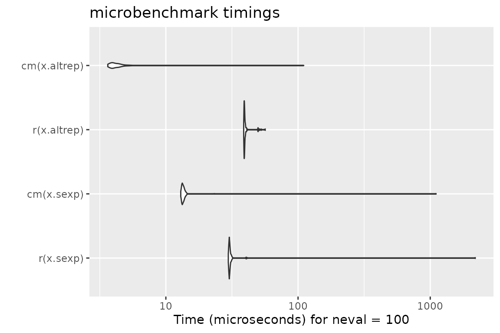

Ever used an R function that produced a not-very-helpful error message, just to discover after minutes of debugging that you simply passed a wrong argument?
Blaming the laziness of the package author for not doing such standard checks (in a dynamically typed language such as R) is at least partially unfair, as R makes these types of checks cumbersome and annoying. Well, that’s how it was in the past.
Enter checkmate.
Virtually every standard type of user error when passing arguments into function can be caught with a simple, readable line which produces an informative error message in case. A substantial part of the package was written in C to minimize any worries about execution time overhead.
Intro
As a motivational example, consider you have a function to calculate
the faculty of a natural number and the user may choose between using
either the stirling approximation or R’s factorial function
(which internally uses the gamma function). Thus, you have two
arguments, n and method. Argument
n must obviously be a positive natural number and
method must be either "stirling" or
"factorial". Here is a version of all the hoops you need to
jump through to ensure that these simple requirements are met:
fact <- function(n, method = "stirling") {
if (length(n) != 1)
stop("Argument 'n' must have length 1")
if (!is.numeric(n))
stop("Argument 'n' must be numeric")
if (is.na(n))
stop("Argument 'n' may not be NA")
if (is.double(n)) {
if (is.nan(n))
stop("Argument 'n' may not be NaN")
if (is.infinite(n))
stop("Argument 'n' must be finite")
if (abs(n - round(n, 0)) > sqrt(.Machine$double.eps))
stop("Argument 'n' must be an integerish value")
n <- as.integer(n)
}
if (n < 0)
stop("Argument 'n' must be >= 0")
if (length(method) != 1)
stop("Argument 'method' must have length 1")
if (!is.character(method) || !method %in% c("stirling", "factorial"))
stop("Argument 'method' must be either 'stirling' or 'factorial'")
if (method == "factorial")
factorial(n)
else
sqrt(2 * pi * n) * (n / exp(1))^n
}And for comparison, here is the same function using checkmate:
fact <- function(n, method = "stirling") {
assertCount(n)
assertChoice(method, c("stirling", "factorial"))
if (method == "factorial")
factorial(n)
else
sqrt(2 * pi * n) * (n / exp(1))^n
}Function overview
The functions can be split into four functional groups, indicated by their prefix.
If prefixed with assert, an error is thrown if the
corresponding check fails. Otherwise, the checked object is returned
invisibly. There are many different coding styles out there in the wild,
but most R programmers stick to either camelBack or
underscore_case. Therefore, checkmate offers
all functions in both flavors: assert_count is just an
alias for assertCount but allows you to retain your
favorite style.
The family of functions prefixed with test always return
the check result as logical value. Again, you can use
test_count and testCount interchangeably.
Functions starting with check return the error message
as a string (or TRUE otherwise) and can be used if you need
more control and, e.g., want to grep on the returned error message.
expect is the last family of functions and is intended
to be used with the testthat package.
All performed checks are logged into the testthat reporter.
Because testthat uses the underscore_case, the
extension functions only come in the underscore style.
All functions are categorized into objects to check on the package help page.
In case you miss flexibility
You can use assert to perform multiple checks at once and throw an assertion if all checks fail.
Here is an example where we check that x is either of class
foo or class bar:
f <- function(x) {
assert(
checkClass(x, "foo"),
checkClass(x, "bar")
)
}Note that assert(, combine = "or") and
assert(, combine = "and") allow to control the logical
combination of the specified checks, and that the former is the
default.
Argument Checks for the Lazy
The following functions allow a special syntax to define argument
checks using a special format specification. E.g.,
qassert(x, "I+") asserts that x is an integer
vector with at least one element and no missing values. This very simple
domain specific language covers a large variety of frequent argument
checks with only a few keystrokes. You choose what you like best.
checkmate as testthat extension
To extend testthat, you
need to IMPORT, DEPEND or SUGGEST on the checkmate package.
Here is a minimal example:
# file: tests/test-all.R
library(testthat)
library(checkmate) # for testthat extensions
test_check("mypkg")Now you are all set and can use more than 30 new expectations in your tests.
test_that("checkmate is a sweet extension for testthat", {
x = runif(100)
expect_numeric(x, len = 100, any.missing = FALSE, lower = 0, upper = 1)
# or, equivalent, using the lazy style:
qexpect(x, "N100[0,1]")
})Speed considerations
In comparison with tediously writing the checks yourself in R (c.f.
factorial example at the beginning of the vignette), R is sometimes a
tad faster while performing checks on scalars. This seems odd at first,
because checkmate is mostly written in C and should be comparably fast.
Yet many of the functions in the base package are not
regular functions, but primitives. While primitives jump directly into
the C code, checkmate has to use the considerably slower
.Call interface. As a result, it is possible to write (very
simple) checks using only the base functions which, under some
circumstances, slightly outperform checkmate. However, if you go one
step further and wrap the custom check into a function to convenient
re-use it, the performance gain is often lost (see benchmark 1).
For larger objects the tide has turned because checkmate avoids many
unnecessary intermediate variables. Also note that the quick/lazy
implementation in
qassert/qtest/qexpect is often a
tad faster because only two arguments have to be evaluated (the object
and the rule) to determine the set of checks to perform.
Below you find some (probably unrepresentative) benchmark. But also
note that this one here has been executed from inside knitr
which is often the cause for outliers in the measured execution time.
Better run the benchmark yourself to get unbiased results.
Benchmark 1: Assert that x is a flag
library(checkmate)
library(ggplot2)
library(microbenchmark)
x = TRUE
r = function(x, na.ok = FALSE) { stopifnot(is.logical(x), length(x) == 1, na.ok || !is.na(x)) }
cm = function(x) assertFlag(x)
cmq = function(x) qassert(x, "B1")
mb = microbenchmark(r(x), cm(x), cmq(x))
print(mb)## Unit: microseconds
## expr min lq mean median uq max neval
## r(x) 3.626 3.7770 26.81270 3.878 4.027 2275.109 100
## cm(x) 2.335 2.5100 10.52551 2.585 2.735 702.803 100
## cmq(x) 1.583 1.6885 11.86649 1.773 1.839 947.980 100
autoplot(mb)Benchmark 2: Assert that x is a numeric of length 1000
with no missing nor NaN values
x = runif(1000)
r = function(x) stopifnot(is.numeric(x), length(x) == 1000, all(!is.na(x) & x >= 0 & x <= 1))
cm = function(x) assertNumeric(x, len = 1000, any.missing = FALSE, lower = 0, upper = 1)
cmq = function(x) qassert(x, "N1000[0,1]")
mb = microbenchmark(r(x), cm(x), cmq(x))
print(mb)## Unit: microseconds
## expr min lq mean median uq max neval
## r(x) 12.473 12.914 45.51176 13.1945 13.7055 3197.090 100
## cm(x) 5.430 5.641 17.24279 5.7455 5.9510 1043.659 100
## cmq(x) 6.261 6.442 14.04154 6.6030 6.7130 743.108 100
autoplot(mb)
Benchmark 3: Assert that x is a character vector with
no missing values nor empty strings
x = sample(letters, 10000, replace = TRUE)
r = function(x) stopifnot(is.character(x), !any(is.na(x)), all(nchar(x) > 0))
cm = function(x) assertCharacter(x, any.missing = FALSE, min.chars = 1)
cmq = function(x) qassert(x, "S+[1,]")
mb = microbenchmark(r(x), cm(x), cmq(x))
print(mb)## Unit: microseconds
## expr min lq mean median uq max neval
## r(x) 280.944 281.6160 316.9670 282.343 292.0400 2693.409 100
## cm(x) 289.871 290.3425 307.1094 291.164 292.8170 1302.842 100
## cmq(x) 125.224 125.5345 134.3979 125.795 126.1655 932.090 100
autoplot(mb)
Benchmark 4: Test that x is a data frame with no
missing values
N = 10000
x = data.frame(a = runif(N), b = sample(letters[1:5], N, replace = TRUE), c = sample(c(FALSE, TRUE), N, replace = TRUE))
r = function(x) is.data.frame(x) && !any(sapply(x, function(x) any(is.na(x))))
cm = function(x) testDataFrame(x, any.missing = FALSE)
cmq = function(x) qtest(x, "D")
mb = microbenchmark(r(x), cm(x), cmq(x))
print(mb)## Unit: microseconds
## expr min lq mean median uq max neval
## r(x) 76.192 77.4045 105.59667 77.946 78.817 2671.829 100
## cm(x) 35.737 36.3375 49.35781 37.580 38.121 997.182 100
## cmq(x) 28.724 28.9340 36.42671 29.285 29.555 716.248 100
autoplot(mb)
# checkmate tries to stop as early as possible
x$a[1] = NA
mb = microbenchmark(r(x), cm(x), cmq(x))
print(mb)## Unit: microseconds
## expr min lq mean median uq max neval
## r(x) 62.707 63.8040 67.57669 64.3755 68.5830 120.816 100
## cm(x) 5.340 5.7660 6.71383 6.5875 7.1290 25.187 100
## cmq(x) 1.012 1.1925 1.70960 1.5880 1.8885 13.606 100
autoplot(mb)
Benchmark 5: Assert that x is an increasing sequence of
integers with no missing values
N = 10000
x.altrep = seq_len(N) # this is an ALTREP in R version >= 3.5.0
x.sexp = c(x.altrep) # this is a regular SEXP OTOH
r = function(x) stopifnot(is.integer(x), !any(is.na(x)), !is.unsorted(x))
cm = function(x) assertInteger(x, any.missing = FALSE, sorted = TRUE)
mb = microbenchmark(r(x.sexp), cm(x.sexp), r(x.altrep), cm(x.altrep))
print(mb)## Unit: microseconds
## expr min lq mean median uq max neval
## r(x.sexp) 29.666 29.9410 51.06597 30.0960 30.292 2093.079 100
## cm(x.sexp) 12.964 13.2400 14.60934 13.4300 13.656 111.157 100
## r(x.altrep) 41.869 42.1385 42.89713 42.2790 42.479 66.464 100
## cm(x.altrep) 3.617 3.8770 13.98243 4.0275 4.243 991.522 100
autoplot(mb)
Extending checkmate
To extend checkmate a custom check* function has to be
written. For example, to check for a square matrix one can re-use parts
of checkmate and extend the check with additional functionality:
checkSquareMatrix = function(x, mode = NULL) {
# check functions must return TRUE on success
# and a custom error message otherwise
res = checkMatrix(x, mode = mode)
if (!isTRUE(res))
return(res)
if (nrow(x) != ncol(x))
return("Must be square")
return(TRUE)
}
# a quick test:
X = matrix(1:9, nrow = 3)
checkSquareMatrix(X)## [1] TRUE
checkSquareMatrix(X, mode = "character")## [1] "Must store characters"
checkSquareMatrix(X[1:2, ])## [1] "Must be square"The respective counterparts to the check-function can be
created using the constructors makeAssertionFunction,
makeTestFunction
and makeExpectationFunction:
# For assertions:
assert_square_matrix = assertSquareMatrix = makeAssertionFunction(checkSquareMatrix)
print(assertSquareMatrix)## function (x, mode = NULL, .var.name = checkmate::vname(x), add = NULL)
## {
## if (missing(x))
## stop(sprintf("argument \"%s\" is missing, with no default",
## .var.name))
## res = checkSquareMatrix(x, mode)
## checkmate::makeAssertion(x, res, .var.name, add)
## }
# For tests:
test_square_matrix = testSquareMatrix = makeTestFunction(checkSquareMatrix)
print(testSquareMatrix)## function (x, mode = NULL)
## {
## isTRUE(checkSquareMatrix(x, mode))
## }
# For expectations:
expect_square_matrix = makeExpectationFunction(checkSquareMatrix)
print(expect_square_matrix)## function (x, mode = NULL, info = NULL, label = vname(x))
## {
## if (missing(x))
## stop(sprintf("Argument '%s' is missing", label))
## res = checkSquareMatrix(x, mode)
## makeExpectation(x, res, info, label)
## }Note that all the additional arguments .var.name,
add, info and label are
automatically joined with the function arguments of your custom check
function. Also note that if you define these functions inside an R
package, the constructors are called at build-time (thus, there is no
negative impact on the runtime).
Calling checkmate from C/C++
The package registers two functions which can be used in other packages’ C/C++ code for argument checks.
SEXP qassert(SEXP x, const char *rule, const char *name);
Rboolean qtest(SEXP x, const char *rule);These are the counterparts to qassert and qtest. Due to their simplistic interface, they perfectly suit the requirements of most type checks in C/C++.
For detailed background information on the register mechanism, see the Exporting C Code section in Hadley’s Book “R Packages” or WRE. Here is a step-by-step guide to get you started:
- Add
checkmateto your “Imports” and “LinkingTo” sections in your DESCRIPTION file. - Create a stub C source file
"checkmate_stub.c", see below. - Include the provided header file
<checkmate.h>in each compilation unit where you want to use checkmate.
File contents for (2):
#include <checkmate.h>
#include <checkmate_stub.c>Session Info
For the sake of completeness, here the sessionInfo() for
the benchmark (but remember the note before on knitr
possibly biasing the results).
## R version 4.3.2 (2023-10-31)
## Platform: x86_64-pc-linux-gnu (64-bit)
## Running under: Ubuntu 22.04.3 LTS
##
## Matrix products: default
## BLAS: /usr/lib/x86_64-linux-gnu/openblas-pthread/libblas.so.3
## LAPACK: /usr/lib/x86_64-linux-gnu/openblas-pthread/libopenblasp-r0.3.20.so; LAPACK version 3.10.0
##
## locale:
## [1] LC_CTYPE=C.UTF-8 LC_NUMERIC=C LC_TIME=C.UTF-8
## [4] LC_COLLATE=C.UTF-8 LC_MONETARY=C.UTF-8 LC_MESSAGES=C.UTF-8
## [7] LC_PAPER=C.UTF-8 LC_NAME=C LC_ADDRESS=C
## [10] LC_TELEPHONE=C LC_MEASUREMENT=C.UTF-8 LC_IDENTIFICATION=C
##
## time zone: UTC
## tzcode source: system (glibc)
##
## attached base packages:
## [1] stats graphics grDevices utils datasets methods base
##
## other attached packages:
## [1] microbenchmark_1.4.10 ggplot2_3.4.4 checkmate_2.3.1
##
## loaded via a namespace (and not attached):
## [1] gtable_0.3.4 jsonlite_1.8.7 highr_0.10 compiler_4.3.2
## [5] stringr_1.5.1 jquerylib_0.1.4 systemfonts_1.0.5 scales_1.3.0
## [9] textshaping_0.3.7 yaml_2.3.7 fastmap_1.1.1 R6_2.5.1
## [13] knitr_1.45 backports_1.4.1 tibble_3.2.1 desc_1.4.2
## [17] munsell_0.5.0 rprojroot_2.0.4 bslib_0.6.1 pillar_1.9.0
## [21] rlang_1.1.2 utf8_1.2.4 cachem_1.0.8 stringi_1.8.2
## [25] xfun_0.41 fs_1.6.3 sass_0.4.7 memoise_2.0.1
## [29] cli_3.6.1 withr_2.5.2 pkgdown_2.0.7 magrittr_2.0.3
## [33] digest_0.6.33 grid_4.3.2 lifecycle_1.0.4 vctrs_0.6.4
## [37] evaluate_0.23 glue_1.6.2 farver_2.1.1 ragg_1.2.6
## [41] fansi_1.0.5 colorspace_2.1-0 rmarkdown_2.25 purrr_1.0.2
## [45] pkgconfig_2.0.3 tools_4.3.2 htmltools_0.5.7